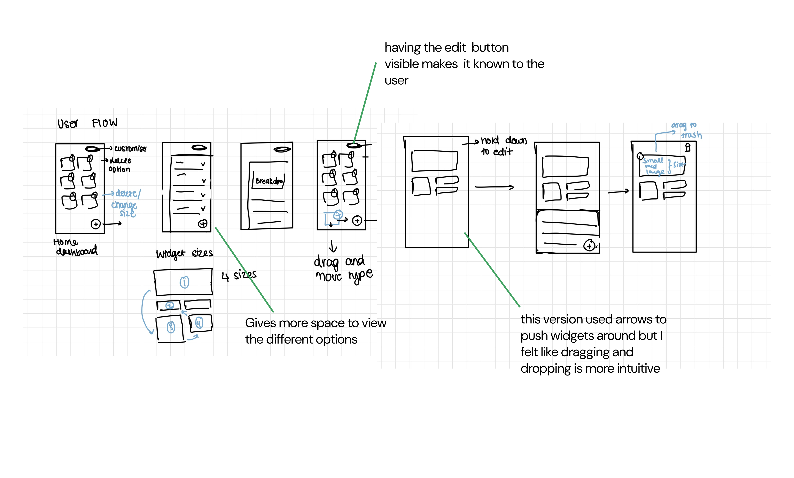
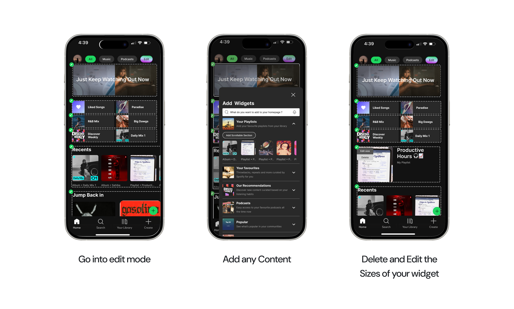

Problem
Spotify’s homepage is largely static and algorithm-driven, with no way for users to surface what matters to them. The interface changes daily, making it hard to build reliable habits. Users end up scrolling past sections they never use to reach the one or two things they actually want.
The core tension: Spotify has built a powerful recommendation engine, but it’s optimized for discovery - not for the times when you just want to get to your thing fast.
Key design decisions
What I prioritised
- Empower user control and personalization Introduce customisable sections on the home screen, allowing users to pin or reorder playlists and categories based on their preferences. This gives users a sense of ownership and relevance.
- Maintain familiarity The widget approach introduces flexibility and visual variety while staying coherent within Spotify’s design system. It lets users prioritise what matters most - similar to personalization on mobile OS dashboards.
- Quick, intuitive access without excessive scrolling By letting users customise what’s on their homepage, the solution aims to reduce excess scrolling and help people reach their favourites faster.
Process
How the day actually went
LavaLab’s design challenge gave applicants one day to improve or add a feature to any streaming platform. The deliverable was due the morning of my case interview - meaning research, synthesis, and final designs all had to happen in one sitting.
-
Morning - 2pm
User interviews
Talked to Spotify users in my circle about their homepage habits and workarounds.
-
2 - 3pm
Affinity mapping
Mapped all homepage section types across multiple accounts in Figma. Easier to reorganize digitally than on sticky notes.
-
3 - 4pm
Lo-fi exploration
Sketched layout directions - widget grids, edit mode entry points, resize behaviors.
-
4 - 8pm
High-fidelity design
Moved into Figma for final screens. Made a deliberate call to deprioritize lower-priority screens to protect quality of the core flow.
Affinity mapping

Low-fidelity wireframes
I explored several layout directions in low fidelity - how widgets could sit in a grid, how edit mode might enter from the profile or header, and how resizing could work without breaking Spotify’s visual rhythm. Those explorations fed mid-fidelity screens focused on clarity, touch targets, and a predictable edit flow before moving to the final solution.

Solution
The final concept centres on a simple loop:
- Go into edit mode to rearrange the homepage.
- Add any content you want surfaced first.
- Delete and resize widgets so the fold reflects your priorities - not only the algorithm’s.

Key takeaways
Fix the sample bias in my research
Everyone I interviewed was in my immediate social circle - not a representative sample. A stranger’s relationship to the Spotify homepage is likely very different. I’d want to talk to casual listeners and podcast-first users before feeling confident in the problem statement.
Validate whether users actually want this
The biggest question that came up in my case interview: do users actually want to customise their homepage, or is that added friction? Customisation only helps if users are motivated to set it up. I’d want to test whether the payoff is clear enough to justify the one-time effort.
Design for where Spotify is heading, not just where it is
Spotify is actively building toward a more AI-driven experience with features like Spotify DJ and expanding into non-music content. A widget system designed today needs to account for those new content types - or it risks becoming outdated quickly.
More case studies